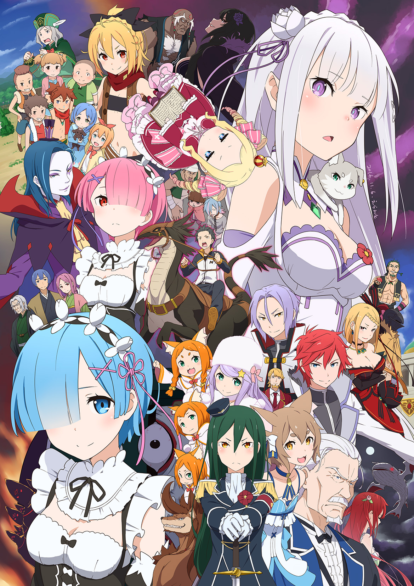
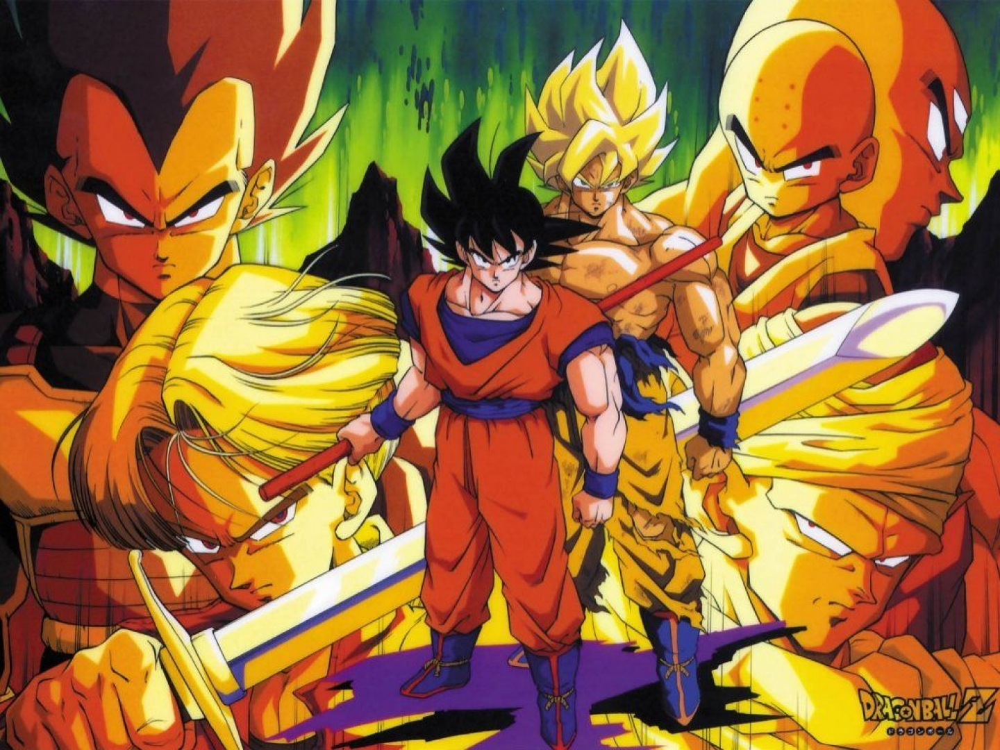
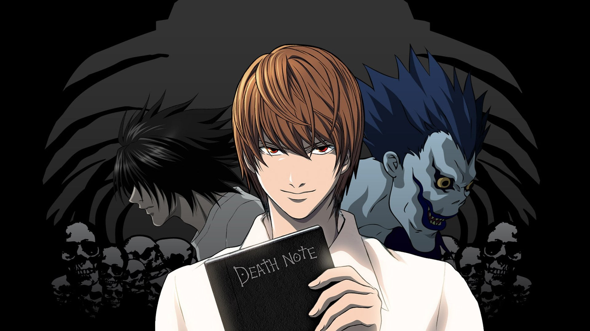
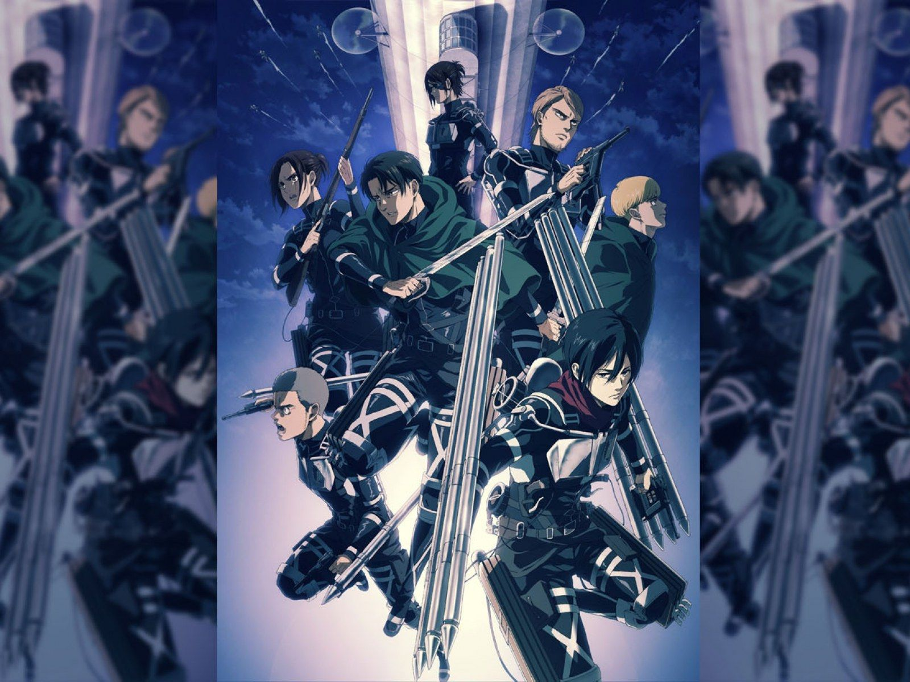
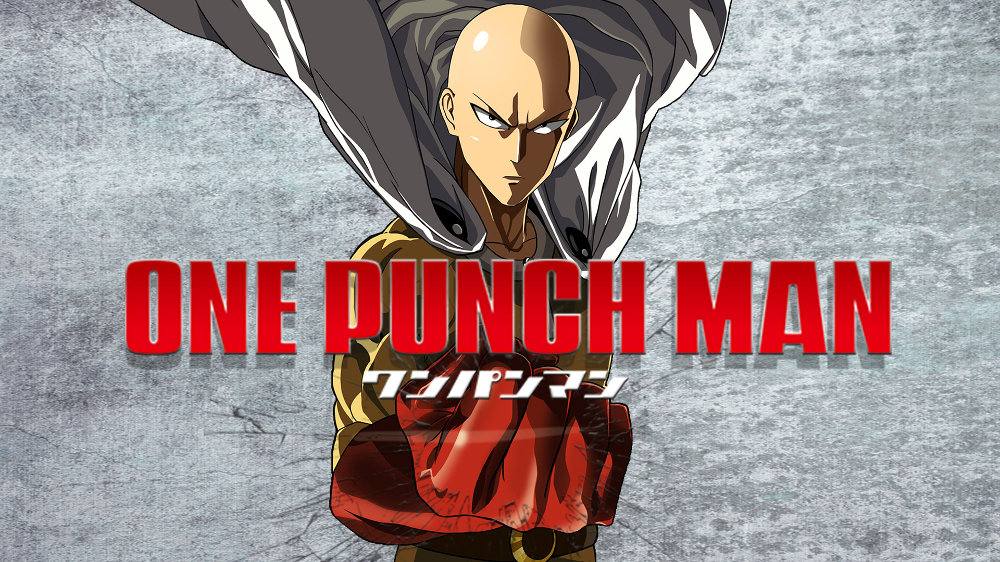

“Anime” es el término que utiliza el público occidental para describir las películas y programas televisivos de animación japoneses (aunque se usa para describir cualquier animación en Japón).
Top Animes más populares
Sinopsis de nuestros animes más populares :D
Re:Zero kara Hajimeru Isekai Seikatsu

Portada de Re zero
Starting Life in Another World sigue a Subaru Natsuki, un joven que es transportado a un mundo de fantasía y descubre que puede regresar al pasado cada vez que muere. Usando su habilidad para corregir errores, Subaru intenta proteger a Emilia, una chica que quiere convertirse en la gobernante del reino. La serie explora su lucha con la desesperación, el trauma y las consecuencias de sus decisiones.
También es conocida como OVA en algunos contextos.
Fecha de estreno:
Dragon Ball Z

Portada de Dragon Ball Z
Dragon Ball Z es la continuación de la serie Dragon Ball y sigue las aventuras de Goku y sus amigos mientras defienden la Tierra de poderosos enemigos. La historia se centra en las batallas épicas contra villanos como Frieza, Cell, y Majin Buu, así como en la búsqueda de las Esferas del Dragón. La serie es conocida por sus intensas peleas, transformaciones de personajes y su enfoque en el crecimiento y la superación personal.
Fecha de estreno:
Death Note

Portada de Death Note
Death Note sigue a Light Yagami, un estudiante de secundaria que encuentra un cuaderno llamado "Death Note." Este cuaderno tiene el poder de matar a cualquier persona cuyo nombre sea escrito en él, siempre y cuando el escritor tenga la cara de la persona en mente. Light decide usar el Death Note para eliminar a criminales y crear un nuevo mundo donde él sea adorado como un dios.A medida que su número de víctimas crece, un misterioso y brillante detective conocido como L se encarga de detenerlo. La serie se convierte en un complejo juego del gato y el ratón entre Light y L, lleno de intriga, manipulación y dilemas morales sobre justicia y poder.
Fecha de estreno:
Shingeki no Kyojin

Portada de Shingeki no Kyojin
Shingeki no Kyojin (en inglés: Attack on Titan) se desarrolla en un mundo donde la humanidad vive dentro de enormes murallas para protegerse de los Titanes, gigantes humanoides que devoran a las personas. La historia sigue a Eren Yeager, su hermana adoptiva Mikasa Ackerman, y su amigo Armin Arlert, quienes se unen a la Legión de Exploración después de que su ciudad es destruida y la madre de Eren es asesinada por un Titán. A medida que luchan contra los Titanes y exploran el mundo exterior, descubren oscuros secretos sobre el origen de los Titanes y la verdadera naturaleza de su mundo. La serie combina acción intensa, intriga política y temas profundos sobre la libertad, la supervivencia y el sacrificio.
Fecha de estreno:
One Punch Man

Portada de One Punch Man
One Punch Man sigue a Saitama, un héroe que puede derrotar a cualquier enemigo con un solo golpe. A pesar de su increíble fuerza, se siente aburrido y frustrado por la falta de desafíos y el reconocimiento que recibe. La serie combina acción intensa con comedia y parodia del género de superhéroes, mostrando las aventuras de Saitama mientras busca un oponente digno y lucha contra monstruos y villanos.